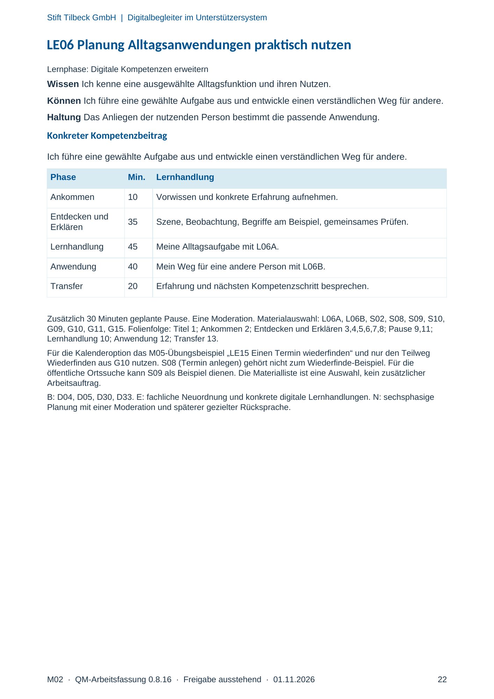
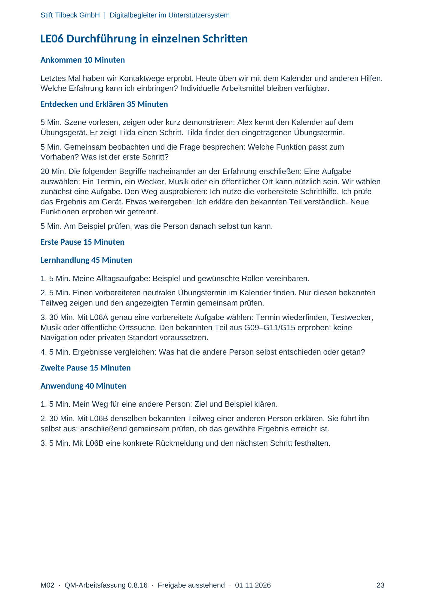
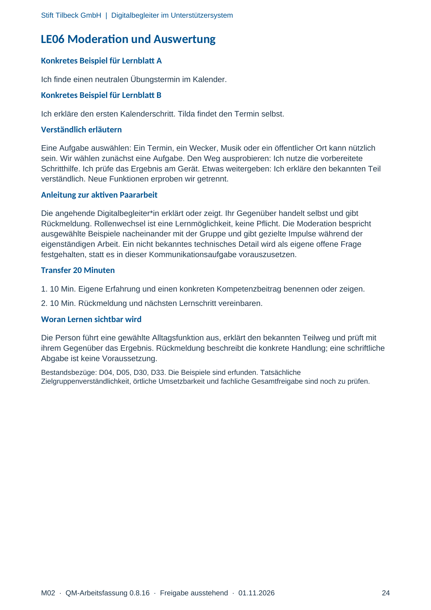

M02 · Originalseite 22, 23, 24
Handbuch und Muster
Gezielte Original-Druckauswahl.
Fragen und Ankreuzfelder werden auf dem Ausdruck bearbeitet. Die Lesefassung speichert keine Antworten.
Lesefassung · Seite 22
Stift Tilbeck GmbH | Digitalbegleiter im Unterstützersystem
M02 · QM-Arbeitsfassung 0.8.16 · Freigabe ausstehend · 01.11.2026 22
LE06 Planung Alltagsanwendungen praktisch nutzen
Lernphase: Digitale Kompetenzen erweitern
Wissen Ich kenne eine ausgewählte Alltagsfunktion und ihren Nutzen.
Können Ich führe eine gewählte Aufgabe aus und entwickle einen verständlichen Weg für andere.
Haltung Das Anliegen der nutzenden Person bestimmt die passende Anwendung.
Konkreter Kompetenzbeitrag
Ich führe eine gewählte Aufgabe aus und entwickle einen verständlichen Weg für andere.
Phase Min. Lernhandlung
Ankommen 10 Vorwissen und konkrete Erfahrung aufnehmen.
Entdecken und
Erklären 35 Szene, Beobachtung, Begriffe am Beispiel, gemeinsames Prüfen.
Lernhandlung 45 Meine Alltagsaufgabe mit L06A.
Anwendung 40 Mein Weg für eine andere Person mit L06B.
Transfer 20 Erfahrung und nächsten Kompetenzschritt besprechen.
Zusätzlich 30 Minuten geplante Pause. Eine Moderation. Materialauswahl: L06A, L06B, S02, S08, S09, S10,
G09, G10, G11, G15. Folienfolge: Titel 1; Ankommen 2; Entdecken und Erklären 3,4,5,6,7,8; Pause 9,11;
Lernhandlung 10; Anwendung 12; Transfer 13.
Für die Kalenderoption das M05-Übungsbeispiel „LE15 Einen Termin wiederfinden“ und nur den Teilweg
Wiederfinden aus G10 nutzen. S08 (Termin anlegen) gehört nicht zum Wiederfinde-Beispiel. Für die
öffentliche Ortssuche kann S09 als Beispiel dienen. Die Materialliste ist eine Auswahl, kein zusätzlicher
Arbeitsauftrag.
B: D04, D05, D30, D33. E: fachliche Neuordnung und konkrete digitale Lernhandlungen. N: sechsphasige
Planung mit einer Moderation und späterer gezielter Rücksprache.
Originalseite ansehen

Lesefassung · Seite 23
Stift Tilbeck GmbH | Digitalbegleiter im Unterstützersystem
M02 · QM-Arbeitsfassung 0.8.16 · Freigabe ausstehend · 01.11.2026 23
LE06 Durchführung in einzelnen Schritten
Ankommen 10 Minuten
Letztes Mal haben wir Kontaktwege erprobt. Heute üben wir mit dem Kalender und anderen Hilfen.
Welche Erfahrung kann ich einbringen? Individuelle Arbeitsmittel bleiben verfügbar.
Entdecken und Erklären 35 Minuten
5 Min. Szene vorlesen, zeigen oder kurz demonstrieren: Alex kennt den Kalender auf dem
Übungsgerät. Er zeigt Tilda einen Schritt. Tilda findet den eingetragenen Übungstermin.
5 Min. Gemeinsam beobachten und die Frage besprechen: Welche Funktion passt zum
Vorhaben? Was ist der erste Schritt?
20 Min. Die folgenden Begriffe nacheinander an der Erfahrung erschließen: Eine Aufgabe
auswählen: Ein Termin, ein Wecker, Musik oder ein öffentlicher Ort kann nützlich sein. Wir wählen
zunächst eine Aufgabe. Den Weg ausprobieren: Ich nutze die vorbereitete Schritthilfe. Ich prüfe
das Ergebnis am Gerät. Etwas weitergeben: Ich erkläre den bekannten Teil verständlich. Neue
Funktionen erproben wir getrennt.
5 Min. Am Beispiel prüfen, was die Person danach selbst tun kann.
Erste Pause 15 Minuten
Lernhandlung 45 Minuten
1. 5 Min. Meine Alltagsaufgabe: Beispiel und gewünschte Rollen vereinbaren.
2. 5 Min. Einen vorbereiteten neutralen Übungstermin im Kalender finden. Nur diesen bekannten
Teilweg zeigen und den angezeigten Termin gemeinsam prüfen.
3. 30 Min. Mit L06A genau eine vorbereitete Aufgabe wählen: Termin wiederfinden, Testwecker,
Musik oder öffentliche Ortssuche. Den bekannten Teil aus G09–G11/G15 erproben; keine
Navigation oder privaten Standort voraussetzen.
4. 5 Min. Ergebnisse vergleichen: Was hat die andere Person selbst entschieden oder getan?
Zweite Pause 15 Minuten
Anwendung 40 Minuten
1. 5 Min. Mein Weg für eine andere Person: Ziel und Beispiel klären.
2. 30 Min. Mit L06B denselben bekannten Teilweg einer anderen Person erklären. Sie führt ihn
selbst aus; anschließend gemeinsam prüfen, ob das gewählte Ergebnis erreicht ist.
3. 5 Min. Mit L06B eine konkrete Rückmeldung und den nächsten Schritt festhalten.
Originalseite ansehen

Lesefassung · Seite 24
Stift Tilbeck GmbH | Digitalbegleiter im Unterstützersystem
M02 · QM-Arbeitsfassung 0.8.16 · Freigabe ausstehend · 01.11.2026 24
LE06 Moderation und Auswertung
Konkretes Beispiel für Lernblatt A
Ich finde einen neutralen Übungstermin im Kalender.
Konkretes Beispiel für Lernblatt B
Ich erkläre den ersten Kalenderschritt. Tilda findet den Termin selbst.
Verständlich erläutern
Eine Aufgabe auswählen: Ein Termin, ein Wecker, Musik oder ein öffentlicher Ort kann nützlich
sein. Wir wählen zunächst eine Aufgabe. Den Weg ausprobieren: Ich nutze die vorbereitete
Schritthilfe. Ich prüfe das Ergebnis am Gerät. Etwas weitergeben: Ich erkläre den bekannten Teil
verständlich. Neue Funktionen erproben wir getrennt.
Anleitung zur aktiven Paararbeit
Die angehende Digitalbegleiter*in erklärt oder zeigt. Ihr Gegenüber handelt selbst und gibt
Rückmeldung. Rollenwechsel ist eine Lernmöglichkeit, keine Pflicht. Die Moderation bespricht
ausgewählte Beispiele nacheinander mit der Gruppe und gibt gezielte Impulse während der
eigenständigen Arbeit. Ein nicht bekanntes technisches Detail wird als eigene offene Frage
festgehalten, statt es in dieser Kommunikationsaufgabe vorauszusetzen.
Transfer 20 Minuten
1. 10 Min. Eigene Erfahrung und einen konkreten Kompetenzbeitrag benennen oder zeigen.
2. 10 Min. Rückmeldung und nächsten Lernschritt vereinbaren.
Woran Lernen sichtbar wird
Die Person führt eine gewählte Alltagsfunktion aus, erklärt den bekannten Teilweg und prüft mit
ihrem Gegenüber das Ergebnis. Rückmeldung beschreibt die konkrete Handlung; eine schriftliche
Abgabe ist keine Voraussetzung.
Bestandsbezüge: D04, D05, D30, D33. Die Beispiele sind erfunden. Tatsächliche
Zielgruppenverständlichkeit, örtliche Umsetzbarkeit und fachliche Gesamtfreigabe sind noch zu prüfen.
Originalseite ansehen
